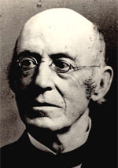

|

|

|
|
|
Militant abolitionist William Lloyd Garrison was born in
1805 in Newburyport, Massachusetts, the son of Abijah
Garrison and Frances "Fanny" Lloyd. Abijah abandoned the
family when William was young, and Fanny was left to raise
three young children on her own. The family's finances were
tight, and young William was regularly dispatched to beg for
scraps from neighbors' tables. From this he developed a
strong sense of compassion for the poor. He was also heavily
influenced by his mother's devout Baptist convictions.
In 1818, the 13-year old William was apprenticed to the
editor of the Newburyport Herald. He completed his
apprenticeship in the mid-1820s, and moved on to serve as
editor of a series of newspapers in Massachusetts and
Vermont. Each of these ventures failed, as readers were put
off by Garrison's anti-government editorials. In 1829,
Garrison accepted a post as the editor of The Genius of
Universal Emancipation, published in Baltimore. In that
capacity, Garrison wrote an editorial that condemned
Massachusetts businessman Francis Todd as a "murderer"
because he had participated in the slave trade. Todd sued,
and Garrison was jailed.
Garrison's imprisonment changed his fortunes. For
forty-nine days, Garrison remained in his cell, publicizing
his "martyrdom." By the time he was released, he had become
a hero among New England's rapidly growing abolitionist
community. Garrison returned to Boston, and promptly founded
a newspaper, The Liberator. In his first issue,
published in January of 1831, Garrison promised to be "harsh
as truth, and uncompromising as justice." He served notice
that, "I will not retreat an inch, AND I WILL BE HEARD."
The Liberator quickly became the preeminent
abolitionist newspaper, and it would remain so throughout
the 1840s and 1850s.
Garrison's message to readers of The Liberator was
that slavery had to be eliminated through immediate
emancipation of the slaves. He believed that to enslave
human beings was a sin, and that both northerners and
southerners were complicit. Garrison rejected colonization,
which was the relocation of freed slaves back to Africa. In
his 1832 pamphlet "Thoughts on African Colonization,"
Garrison explained that that he found colonization to be
both impractical and racist. Instead, he thought the slave
problem should be solved through "moral suasion," the use of
petitions, speeches, newspapers and pamphlets to peacefully
turn public opinion against slavery.
In 1833, Garrison reached the height of his influence. He
helped to found the American Anti-Slavery Society, a
bi-racial, gender-inclusive organization dedicated to
promoting abolitionist activities throughout the United
States. Garrison authored the Society's Declaration of
Sentiments, which emphasized nonviolence, and urged
abolitionists to do whatever necessary to cause their
message to be heard. In 1834, shortly after completing the
Declaration of Sentiments, Garrison married Helen Benson.
During the latter part of the 1830's, Garrison grew
increasingly radical. He was attacked by a mob in 1835, and
had to be rescued from being lynched. A number of other
events, including the murder of abolitionist Elijah Lovejoy,
Congress' tabling of all antislavery petitions and the
failure of church leaders to join in the abolition movement,
left Garrison disillusioned. He came to believe that
government and religious institutions had become corrupted
and needed to be overthrown. He condemned Christian
scripture as "superstition" and vowed that he would only
follow the "pure religion of Jesus' perfect example." He
called the U.S. Constitution "a covenant with death-an
agreement from hell," and suggested that the states without
slavery should secede from the Union.
Garrison's increased militancy created serious tensions
within the abolitionist movement. A number of prominent
Garrison supporters were put off by what they saw as
blasphemy. Others disagreed with Garrison's unwillingness to
work within the political system. Some abolitionists did not
approve of Garrison's belief in women's suffrage. And a
number of African-American abolitionists, including
Frederick Douglass, were angered by Garrison's paternalism.
He was willing to fight for African-Americans' freedom, but
generally unwilling to make them equal partners in the
struggle by appointing them to leadership positions within
the American Anti-Slavery Society.
In 1840, the split between "Garrisonian" and
"anti-Garrisonian" factions became official, as a number of
prominent abolitionists resigned from the American
Anti-Slavery Society and founded the Foreign Anti-Slavery
society. Others left to found the Liberty Party, the United
States' first anti-slavery political party. In seven years,
Garrison had gone from being the leader of the abolition
movement to being on the fringes. Garrison continued to
generate attention with The Liberator, and with
outrageous gestures like publicly burning copies of the U.S.
Constitution, but he had little influence on the
anti-slavery movement.
During the Civil War, Garrison began to back off from his
nonviolent philosophy, conceding that the use of force was
sometimes necessary. He also came to be a supporter of
Abraham Lincoln. When the war ended, and the Thirteenth
Amendment was adopted, Garrison told the readers of The
Liberator that his work was at an end. Although he supported
Radical Reconstruction, he evinced little interest in
joining the fight for African-American civil rights. At the
end of 1865, Garrison shut down his newspaper and resigned
from the American Anti-Slavery Society. By 1866, his career
as a public figure was essentially over. Garrison devoted
the rest of his life to the care of his wife and four sons
before dying in New York in 1879.
Source: Joan Waugh, ed., Facts on File Encyclopedia of American
History: Civil War and Reconstruction, 1856 to 1869 (New York: Facts on
File, 2003), 145-147.
|